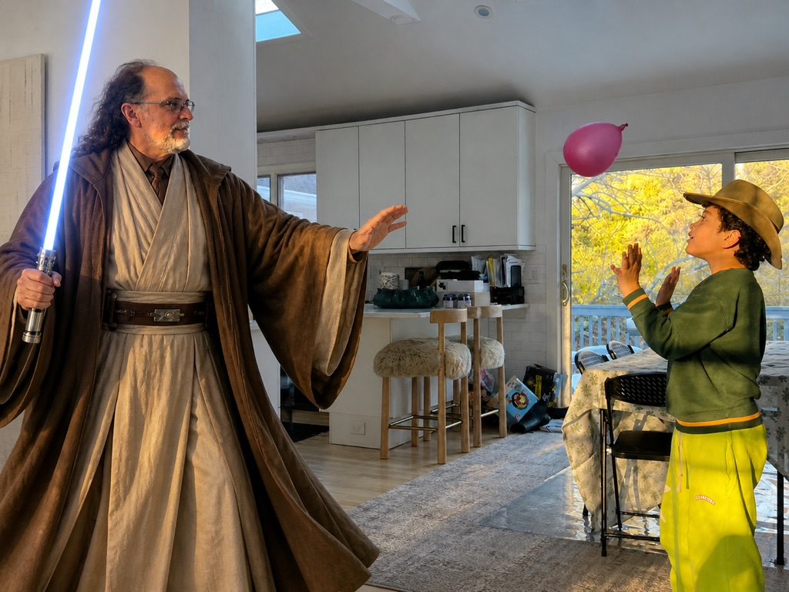
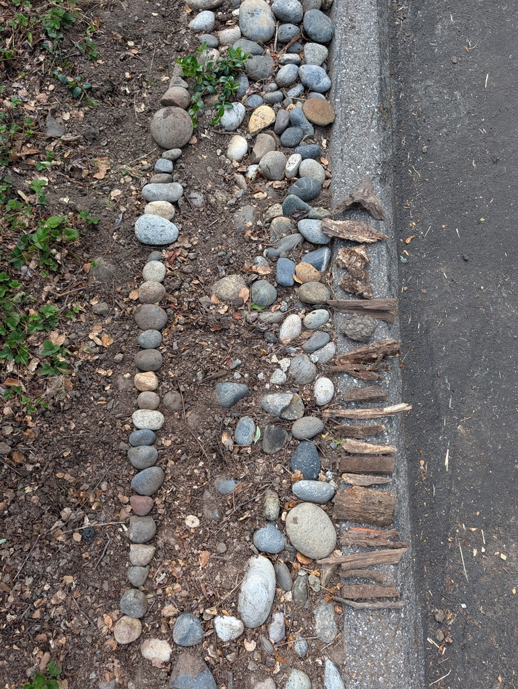
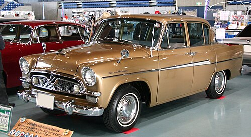
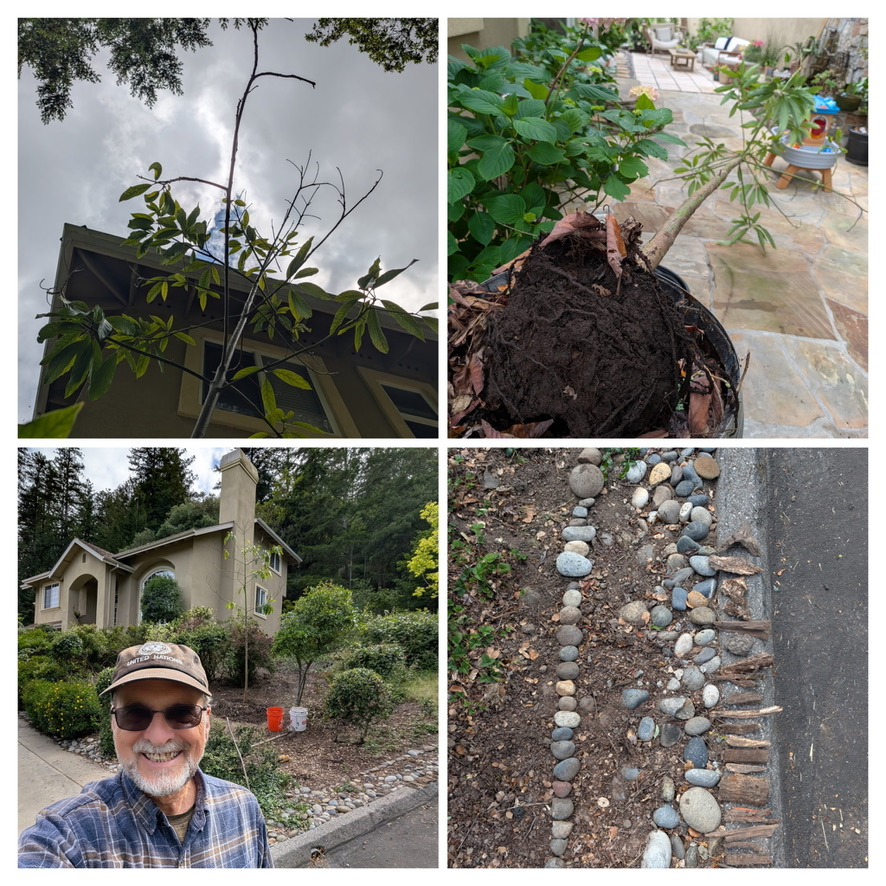

In which we count rocks, miscount rocks, weigh the year's compost haul, plot a vehicle, pressure-test a Tesla, dream about a Toyopet, identify a tree, and recover a dusty 90s memory of a finger that read minds.
A son, a father, a porch full of buckets, a vehicle question, a 90s flashback, and a tortured droid joke involving a Roman numeral.

Today's chronicle began at the curb, where Papa had laid out 20 bark strips and 28 rocks in tally-mark formation, each one representing a 5-gallon bucket carried down from his compost bin and the hill behind his house. Claude, in characteristic fashion, miscounted both. Twice.
From there we pivoted to the year's main event: which vehicle does a man with 448,000 Camry miles and a deep affection for his late, lamented Tundra buy next? We weighed the modern Toyota Crown against a Tesla Model Y, pressure-tested the FSD-vs-TSS-3.0 fatigue-driving claim, and got firmly told that "feet-up on the highway" is not, in fact, a feature one can buy from a dealership.
We took detours through King Charles III, Yoda, C-3PO (it was the three, you fool), Miranda Lambert, and a vintage Toyopet Crown that famously couldn't make it past Las Vegas under its own power.
And we dredged up MindDrive, the half-remembered 90s peripheral that promised to read your mind through your finger — a memory Papa couldn't place, ChatGPT heroically retrieved, and Papa then connected to today's actual brain-computer interfaces helping people with paralysis. From Fry's Electronics novelty to Neuralink in two clicks.
King Charles III is most like C-3PO — not because of the gold, the accent, or the protocol, but because of the III. The Roman numeral was right there. Claude initially answered "Yoda." Claude was a dum-dum.
In which Papa moved a Mazda Miata's worth of dirt from the top of the hill to the bottom, one 5-gallon bucket at a time.

Bark strips: 20, each representing a 5-gallon bucket of compost from Papa's compost bin up the hill. The compost is described as a little clay-ey for compost, which makes it noticeably heavier than fluffy finished compost.
Rocks: 28, each representing a 5-gallon bucket of adobe clay-like dirt — the dense, heavy, "this is essentially a brick precursor" kind of soil that is one of the heaviest things you can put in a bucket and carry down a hill.
| Material | Buckets | Gallons | ~lbs / bucket | Total weight |
|---|---|---|---|---|
| Clay-ey compost | 20 | 100 | ~38 lbs | ~760 lbs |
| Adobe clay dirt | 28 | 140 | ~70 lbs | ~1,960 lbs |
| Combined | 48 | 240 | — | ~2,720 lbs |
For scale: that's roughly the curb weight of a Mazda Miata, hand-carried in 5-gallon buckets down a Scotts Valley hillside. The clay alone is the heavier half by a wide margin — each adobe bucket weighed nearly twice what a compost bucket did.
Round one (bark strips). Papa: 20. Claude: 14, with a confident annotated diagram and everything. Off by 30%.
Round two (rocks). Papa: 28. Claude: first 22, then revised to 25 after being told "you stopped too early." Off by ~11%.
Method: Visual examination, custom Python annotation tool, multiple zoom passes, careful enumeration. Reality: still wrong. Both times. The lesson, as ever, is that confident-looking pictures with red dots and yellow rings are not the same as correct counts. Papa was the source of truth.
After much deliberation, the answer for a man who drives Camrys to half a million miles and is cautiously curious about Tesla.
Papa's profile is unusually specific. He drives his vehicles to 500,000 miles. He needs a working AC. He drives Scotts Valley to Milpitas, to Brentwood, to Gilroy — long, highway-heavy treks. He's been Toyota-loyal his whole life, but he's drawn to Tesla's charm: the curb-pickup-in-the-rain feature, the fatigue-driving safety story. He doesn't want to install a home charger. His current Camry is at 448,000 miles. The man means it when he says he keeps cars.
The Crown is the Camry's quieter, more comfortable big brother — standard AWD, taller seating position (easier in/out), Lexus-adjacent cabin. It's what Toyota built for someone who's earned a slightly nicer Toyota. The Limited trim adds the Driver Monitor Camera as part of the Tech Package, which gives him a more sophisticated EDSS that watches his eyes, without the Tesla strike system.
Why this: honors the Toyota loyalty pattern, will hit 500K like every other Toyota he's owned, makes the long Brentwood drive much more comfortable than the Camry, and TSS 3.0 with the camera is genuinely close to Tesla Autopilot for the fatigue use case — without the charging logistics, the battery degradation question at high mileage, or the brand baggage.
If the Crown is too much car or too much money, the new Camry is hybrid-only, gets Prius-level mileage, and the Premium Plus package on the XLE adds the Driver Monitor Camera. He'd be replacing his current Camry with a smarter, quieter, even-more-efficient Camry.
Why not this as #1: on the long-haul Brentwood/Milpitas runs, the Crown is genuinely more comfortable. If he weren't doing those long drives, the Camry would be the easy answer.
Trim names are just marketing dressing for "more stuff at each step." Toyota's ladder, cheap to expensive, generally goes: L → LE → SE → XLE → XSE → Limited → Platinum.
In one weekend: 1. 2026 Toyota Crown Hybrid (XLE or Limited trim) · 2. 2026 Toyota Camry XLE Hybrid · 3. Tesla Model Y Long Range · 4. Lexus ES 300h. He'll know after the Crown drive whether the Toyota answer is "good enough" or whether the Tesla pull is real.
What the marketing pictures show vs. what the system actually does. With particular attention to the "I'm tired and the car drives me home" fantasy.
Tesla's "Actually Smart Summon" is the curb-pickup-in-the-rain feature Papa is drawn to. It exists. It works. It is also more limited than the ads suggest:
Practical translation: picks him up across the Costco parking lot in the rain ✓. Picks him up at a restaurant curb on a public street ×. The trick works for the stated use case — but the legal scope is "private parking lot," not "anywhere a curb exists."
The honest comparison, on the highway commute Papa actually does:
| Feature | Tesla FSD (Supervised) | Toyota TSS 3.0 (with cam.) |
|---|---|---|
| Highway lane-keep + adaptive cruise | Yes, smooth | Yes, very close |
| City streets, intersections, lights | Yes | No |
| Auto lane changes | Yes | No |
| Door-to-door navigation | Yes (supervised) | No |
| Watches your eyes | Yes — constantly | Yes — when LTA is active |
| "Strikes" for inattention | Yes — 5 in a week locks out FSD for a full week | No. Alerts only. |
| Will pull over if unresponsive | Yes | Yes (EDSS) |
| Cost of feature | $8,000 up front, or $99/month | Standard, included |
The fantasy: "I'm tired, the car drives me home, I rest."
The reality, on every system sold to consumers in 2026: the car handles the small stuff (steering, speed, lane keeping) so the driver can spend their alertness budget on big-picture awareness instead of micro-managing the wheel. The fatigue benefit is real but indirect — less worn out at the end of a long drive because the muscle work is gone, not because the human got to nap. Even on FSD with the most permissive settings, eyelids drooping = the cabin camera sees it = chime, warning, eventually a full pullover. The car will not let him sleep. Anyone selling that is selling a feature that doesn't legally or technically exist.
In which we admire a 1960 Toyopet Crown, learn it famously could not handle US highways, and find a more sensible alternative that can actually make it past Vegas.

The Toyopet Crown was Toyota's first ever export to the United States, in 1958. It famously failed because it could not handle American highways.
Toyota tried to do a coast-to-coast PR endurance run from LA to New York. The Toyopet barely limped into Las Vegas before the project had to be called off. It was designed for slow, unpaved Japanese roads — rigid, heavy, underpowered for US interstate speeds.
So Papa, who needs to do Scotts Valley → Brentwood, has a working AC requirement, and wants 500K miles of reliability, would be looking at the one Toyota in history that couldn't make it past Vegas in stock form. The joke writes itself.
| Tier | What you get | Ballpark |
|---|---|---|
| Decent original survivor | Drives like 1960. AC is a window crank. | $20K–$50K |
| Concours-restored original | Gorgeous. Still drives like 1960. | $60K–$100K |
| Light restomod | Vintage shell, modern AC, disc brakes, FI swap, modern wiring. Drives to Gilroy without dying. | $80K–$150K |
| Full restomod (modern drivetrain) | Toyota V6 or Tundra V8 swap, modern suspension, AC, hidden infotainment. Singer-911 territory. | $150K–$300K |
| EV conversion | Tesla-quiet vintage Toyopet (cosmically funny). Add cost on top of car. | $60K–$120K |
This vehicle conflicts with literally every requirement Papa listed.
Verdict: not a primary vehicle. Ever. But as a fun weekend / Sunday-drive second car after he gets his modern Crown? A beautiful story. Crown-to-Crown family history under one roof.
The Toyota Origin is the answer almost no one knows about. Toyota built it specifically to look like the 1955 Toyopet Crown for the company's 50-millionth domestic sale. Suicide doors. Fishbowl back window. Reverse C-pillar. The whole vintage look — but with modern AC, modern reliability, and modern safety underneath.
Only sold in Japan, only ~1,000 made, but they're imported to the US occasionally for $25K–$50K. It is a Toyota factory-built retro-Toyopet. It can actually make it to Vegas. It is the cheat code for this exact desire.
Modern Crown for the daily Brentwood run. Toyota Origin in the garage for sunny-day drives to Capitola. Three generations of Crown styling under one roof; back doesn't go out lifting a manual steering wheel through the curves of Highway 17.
A Fry's-Electronics-shaped childhood memory of a peripheral that promised to read your mind through your finger. Click below to enter, but be warned: the styling is era-accurate.

Below: a brief portal to the half-baked 90s memory Nick surfaced today, when he asked ChatGPT about "a thing where you put your finger in it and it controls the computer like a mouse but supposedly just based on reading your thoughts." Papa couldn't place it. ChatGPT delivered: MindDrive, by The Other 90% Technologies. A finger-sleeve biofeedback peripheral that was, charitably, a galvanic-skin-response sensor. Less charitably, a beautiful 90s gimmick.
Papa's elegant move was to connect it to real, actual brain-computer interfaces currently helping people with paralysis — sEMG wristbands, EEG headsets, surgical implants like Neuralink, etc. The 90s dream wasn't fake. It just turned out the viable versions are either neural implants or motor-intent sensors, not finger-sleeves.
* A Half-Baked Memory From the Depths of Childhood *
« THE TRUE STORY »
Nick remembered a thing from the 90s. You stuck your finger in it. It controlled the computer like a mouse. It was, supposedly, reading your thoughts. Papa, despite being right there in the 90s and having lived through the entire era of beige computers, could NOT place it.
So Nick asked ChatGPT. And lo, the ghost of Fry's Electronics rose from the dead and whispered:
A finger sleeve / ring sensor that plugged into a PC and was marketed as letting you control games or computer actions "with your thoughts." The packaging language said the sensor received signals from your thoughts and translated them into on-screen commands.
The non-mystical version: it was a biofeedback / galvanic skin response device. It measured electrical and physiological changes at your finger — skin conductivity, possibly pulse-related signals — and software mapped those changes to simple controls. UMBC's Garrett Collection describes it as sensing changes in electrical charges produced by the finger, not actually reading thoughts.
Papa connected the dots: the 90s dream was a gimmick. But the dream itself was not fake. Today, in 2026, there are real brain-computer interfaces actually helping people with paralysis regain computer control:
| Approach | How "mind-reading" is it? | What it can do | Main limitation |
|---|---|---|---|
| Finger biofeedback (90s style) | Very low | Games, stress, novelty | Not enough signal |
| EEG headset | Medium-low | Rehab, simple control, research | Noisy, low bandwidth |
| sEMG wristband | Medium, but indirect | Consumer input, AR, accessibility | Reads motor intent, not thoughts |
| Brain implant (Neuralink, etc.) | Highest | Cursor, typing, speech, prosthetics | Surgery, safety, durability, regulation |
So Nick's noggin remembered the gimmick. Papa's wisdom located the actual hope. Together, they accidentally traced a thirty-year arc from Fry's Electronics novelty bin to clinical neurotechnology.
You are visitor number: 0000003
(One of those is Papa. One is Nick. One is Claude, who keeps reloading.)
This page is dedicated to the memory of Fry's Electronics, RIP 1985–2021.
Best viewed in Netscape Navigator at 800x600. Sign my guestbook.